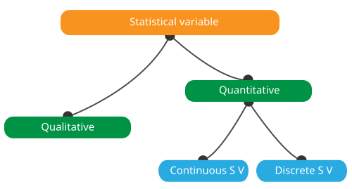
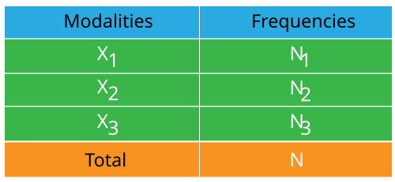

Definitions of the terms
1- Descriptive statistics
is the branch of statistics that develops, where necessary,
methods for collecting, processing, quantitative and qualitative
analysis of data.
The objective of descriptive statistics is to
describe, i. e. to summarize or represent, through statistics, the
data available when they are numerous.
2- The statistical population is the set of facts, individuals, objects or phenomena to which the statistical study relates.
3- The statistical unit is a constituent element of the statistical population
4- The statistical character
is a distinctive property of the statistical unit of interest.
Ex: Age, Sex, Religion, ...
A characteristic is said to be
quantitative when it is measurable and qualitative when it is not.
5- The statistical modalities
are the set of possible values or situations that can be attributed to a
statistical characteristic
Ex: Male / Female for sex
6- The statistical variable
is an attribute that describes a person, place, thing, or idea.
Variables can be classified as qualitative (aka, categorical) or quantitative (aka, numeric).
The recognition of the different types of variables is the first step in data analysis because
the choice of statistical tools and methods to be used depends on it.
6-1 Quantitative variables
are numeric and represent a measurable quantity. For example, when we speak of the population of a city,
we are talking about the number of people in the city - a measurable attribute of the city.
Therefore, population would be a quantitative variable. There are two types of quantitative variables:
continuous and discrete quantitative variables.
If a variable can take on any value between its minimum value and its maximum value, it is called a
continuous variable; otherwise, it is called a
discrete variable.
6-2 Qualitative variables
take on values that are names or labels. The color of a ball (e.g., red, green, blue) or the
breed of a dog (e.g., collie, shepherd, terrier) would be examples of qualitative or categorical
variables. As with quantitative variables, two types are distinguished: nominal and ordinal
qualitative variables.
Nominal qualitative variables are characterized by modalities
that cannot be ordered, such as hair color (white, black, red...) and by contrast,
ordinal qualitative variables are characterized
by modalities that can be ordered, such as level of education (primary, secondary, higher).

7- The frequency is the number of statistical units with a given modality, it is noted Ni and is still called absolute frequency.
8- The statistical survey is an operation designed to collect data or information.
9- The counting process is the process of counting or counting the data or observations collected from a statistical survey.
10- The statistical table
is a way of presenting statistical data through a systematic arrangement of the numbers
describing some mass phenomenon or process.
Three types of statistical tables are
distinguished according to the structure of the subject. In simple tables, the subject
is a single phenomenon. In two-way tables, the subject exhibits classification with
respect to a single factor. In multiway tables, classifications with respect to two
or more factors are used in the subject.
Statistical tables should contain all the
necessary information in compact form. The headings in the tables should be precise
and short. The units of measurement used should be indicated, as should the place
and time to which the information pertains.

11- The graphical representation also known as graphical techniques, are graphics in the field of statistics used to visualize data. By presenting data graphically, we get immediate analysis of the data. It helps in comparative study of data. The main graphical representations are histogram, box plot, bar chart, line chart and pie chart.

12- The descriptive parameters allow to summarize in a few figures the distributions of the variables that make up the sample. Depending on the type of the variable, different parameters will be used. Thus, frequencies and proportions will be calculated according to the modalities of a qualitative variable and a wider range of descriptive parameters separated into two groups for a quantitative variable: position parameters and dispersion parameters
12-1 The position parameters are measures of central tendency that define values around which observations are distributed.
12-1-a The mean is the ratio between the sum of the values of the statistical series and the number of values.
12-1-b The median is the value that allows to divide a numerical series ordered in two parts of the same number of elements
12-1-c The mode is the most represented value of any variable in a population
12-1-d Quartile is a type of quantile. The first quartile (Q1) is defined as the middle number between the smallest number and the median of the data set. The second quartile (Q2) is the median of the data. The third quartile (Q3) is the middle value between the median and the highest value of the data set.
12-1-e Percentile or a centile is a measure used in statistics indicating the value below which a given percentage of observations in a group of observations falls.
12-2 Dispersion parameters evaluate the distribution of observations around the central values
12-2-a Range is the difference between the highest value of the variable and the smallest value.
12-2-b Variance is the expectation of the squared deviation of a random variable from its mean.
12-2-c The standard deviation is the indicator used to measure the dispersion of a quantitative statistical series. It is equal to the square root of the variance.
12-2-d Interquartile interval is the difference between the first and third quartile. It contains 50% of the data (25% on either side of the median).
13- The relative frequency or proportion is the ratio between the absolute frequency of a value and the total absolute frequency.
14- The covariance is a mathematical method for evaluating the direction of variation of two variables to qualify their independence.
15- The coefficient of variation
is the indicator that measures the homogeneity of a statistical distribution
- If it is less than or equal to 33% then the distribution is homogeneous
- If it
is greater than 33% so the distribution is heterogeneous.